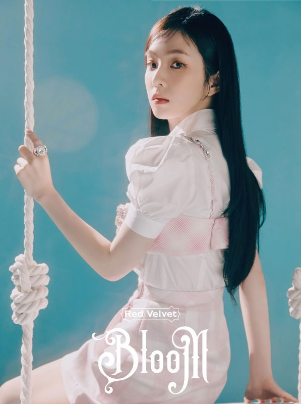
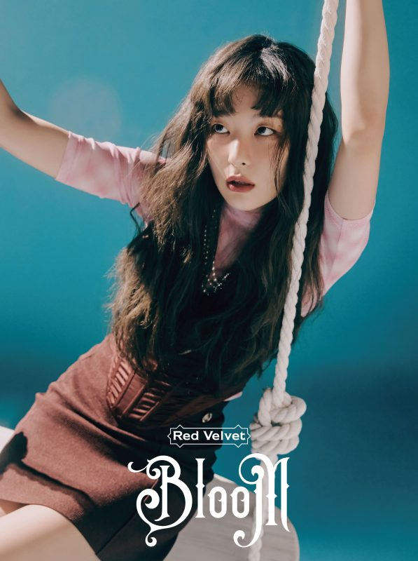
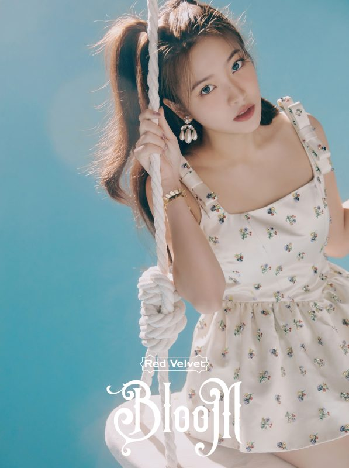

About Red Velvet
레드벨벳
Red Velvet (레드벨벳) is a girl group that consists of 5 members: Irene, Seulgi, Wendy, Joy and Yeri. Red Velvet debuted on August 1, 2014, under S.M. Entertainment.
Red Velvet is known for their unique dual concept which has never been seen before among South Korean girl groups. These two concepts are dubbed their 'Red' and 'Velvet' sides which influences both their image and the music they release. The 'Red' half is their brighter and bubblier side while their 'Velvet' image is their softer, more mature and elegant concept. Since the 'Red' side is more youthful, the music is predominantly pop and they are usually dressed in colorful, girlish clothing like in "Ice Cream Cake" and "Dumb Dumb". On the other hand, their sophisticated 'Velvet' side heavily features the R&B and ballad genres while they are dressed more maturely, most notably, when the girls wore suits for "Be Natural".
Irene
Seulgi
Wendy
Joy
Yeri
Discography
Check out their latest hits!


Watch their Music Videos!
Feel My Rhythm
Mar 21,2022
"Feel My Rhythm" is a dance-pop song that samples the Bach arrangement "Air on the G String", featuring "delicate" and "elegant" string melodies, "intense" trap beats, and "fantastic" vocal charm.The song draws inspiration from Bach and ballet, blending modern pop sensibilities with classical music.
Queendom
Aug 16,2021
Queendom consists of six songs and incorporates various genres such as dance-pop, R&B, and soul.The title track "Queendom" was described as a dance-pop song with a "refreshing atmosphere".
Pyscho
Dec 23 2019
“Psycho" is an R&B track that incorporates elements of trap and future bass, and is about a couple who are in a complicated romantic relationship.
ReVeluv
Connect with Red Velvet!
ReVeluv (Kor. 레베럽) is the official fandom name for the South Korean girl group Red Velvet.
The ReVe in the fandom name stands for the first two letters of Red and Velvet. It also means dream in French, meaning ReVeluvs makes Red Velvet‘s dreams come true. The luv in ReVeluv stands for the love Red Velvet and ReVeluvs have for each other.
The fan colour is pastel pink.